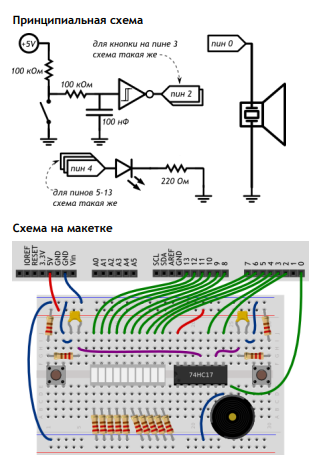

#define BUZZER_PIN 0
#define FIRST_BAR_PIN 4
#define BAR_COUNT 10
#define MAX_SCORE 20
// глобальные переменные, используемые в прерываниях (см. далее)
// должны быть отмечены как нестабильные (англ. volatile)
volatile int score = 0;
void setup()
{
for (int i = 0; i < BAR_COUNT; ++i)
pinMode(i + FIRST_BAR_PIN, OUTPUT);
pinMode(BUZZER_PIN, OUTPUT);
// Прерывание (англ. interrupt) приостанавливает основную
// программу, выполняет заданную функцию, а затем возобновляет
// основную программу. Нам нужно прерывание на нажатие кнопки,
// т.е. при смене сигнала с высокого на низкий, т.е. на
// нисходящем (англ. falling) фронте
attachInterrupt(INT1, pushP1, FALLING); // INT1 — это 3-й пин
attachInterrupt(INT0, pushP2, FALLING); // INT0 — это 2-й пин
}
void pushP1() { ++score; } // функция-прерывание 1-го игрока
void pushP2() { --score; } // функция-прерывание 2-го игрока
void loop()
{
tone(BUZZER_PIN, 2000, 1000); // даём сигнал к старту.
// пока никто из игроков не выиграл, обновляем «канат»
while (abs(score) < MAX_SCORE) {
int bound = map(score, -MAX_SCORE, MAX_SCORE, 0, BAR_COUNT);
int left = min(bound, BAR_COUNT / 2 - 1);
int right = max(bound, BAR_COUNT / 2);
for (int i = 0; i < BAR_COUNT; ++i)
digitalWrite(i + FIRST_BAR_PIN, i >= left && i <= right);
}
tone(BUZZER_PIN, 4000, 1000); // даём сигнал победы
while (true) {} // «подвешиваем» плату до перезагрузки
}